「区块链周报第一期」沉睡七年比特币巨鲸高调换仓以太坊，是神之一手、内幕还是最后的逃命机会？[09/01-09/07]
BTC/ETH/ADA 价格
BTC 107000-113000 之间震荡整理
三个代币的价格走势几乎和比特币一致，没有独立行情
BTCUSD - TradingView
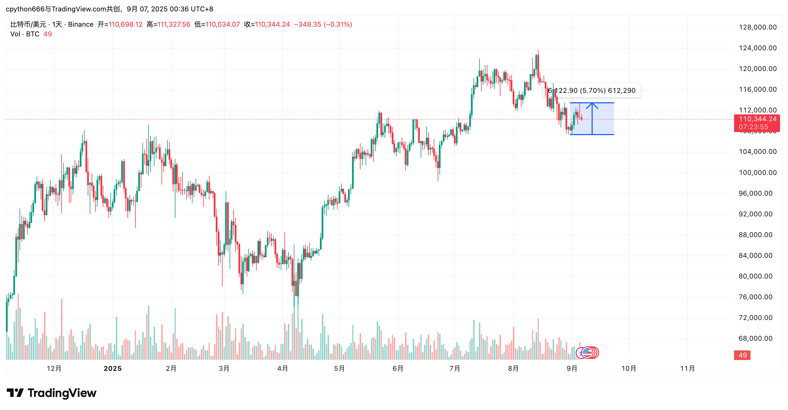
ETH 4200-4500 之间震荡整理
ETHUSD - TradingView
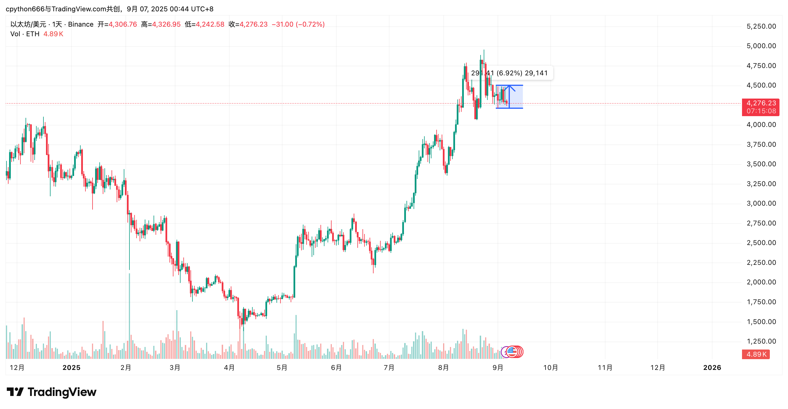
ADA 0.781-0.85 之间震荡整理
ETHUSD - TradingView
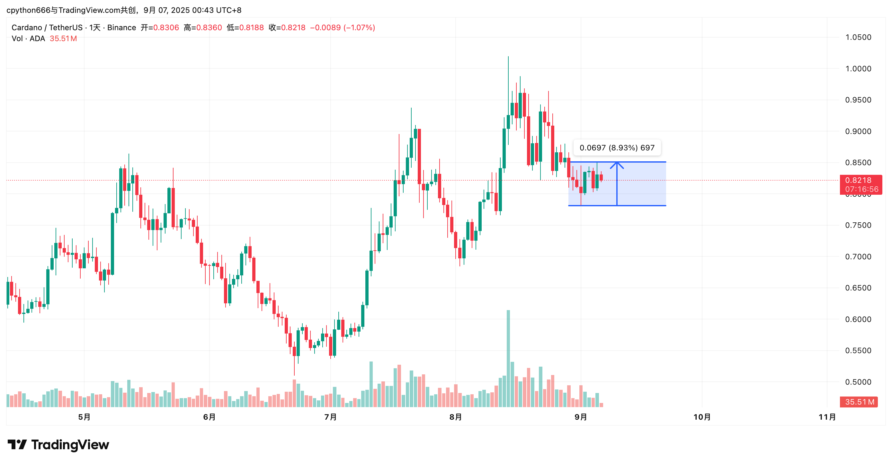
沉睡七年比特币巨鲸高调换仓以太坊，是神之一手、内幕还是最后的逃命机会？
鲸鱼从 BTC 换仓到 ETH
巨鲸正在集体叛逃BTC换仓ETH，新王正在诞生？
某个沉睡七年的拥有8w多个 $BTC 的远古巨鲸正在通过 Hyperliquid 高调换仓为 ETH
持有 10,606 枚 BTC 长达 7 年之久盈利 $11.2 亿的巨鲸/机构 将 $BTC 换仓到 $ETH
8/28时候以太坊的价格大致在4500左右
- 我个人的分析是：有这么多比特币说明有钱，能拿七年经历两轮牛熊，说明有认知，肯定不是等闲之辈
- 机构参与是坏事吗？
- 评论区有兄弟疑惑现在都是机构参与，散户进去怕是只能被割。现货不怕，跟着机构吃肉的好机会。
- 现货不怕。真正知道加密货币本质的就会知道比特币是一项会随着时间不断增长的资产。
逆向思维思考的话，会是假动作吸引散户fomo吗，没有人知道，web3世界就是黑暗森林，任何东西可能是机会也可能是陷阱。散户能做的就是保护好自己的本金，拥有一个正确的投资理念和方法。
wlfi上线即暴跌，孙割背锅？
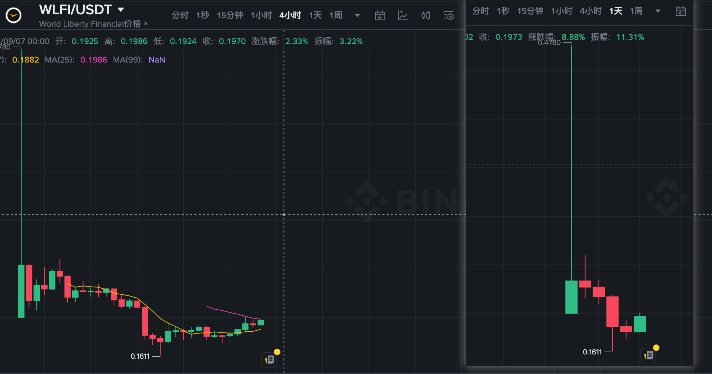
- 刚上线热炒的币一般是不建议散户冲进去的，实在想参与可以等过段时间k线稳定下来，走势明显了在入手
- 比如说稳定币第一个上市的USDC的发行公司Circle，股价刚发行直接在几天内从64块涨到298块将近五倍，其实私募应该是30多块。现在也跌到了110多块。
- 其实不在FOMO的时候做交易，要买在无人问津，卖在人声鼎沸这些道理我也懂，但是真的还是做不到。交易的过程就是一场修行，希望我可以早日战胜自己的贪念。
网上的情况挺复杂的，有说大额抛压来源于交易所，有说是发孙割黑帖的，有说孙割和Trump唱双簧的，有说孙割砸的盘的，我是已经分不清了。我是废物我是韭菜，呜呜呜🥹😭
孙哥还是服软了，要拿2000W刀出来表忠心，其实不出意料。
WLFI：或存在CEX转移用户WLFI进行抛售，团队正展开调查
SEC成立特别工作组打击跨境交易欺诈行为
个人觉得会有炒作，现货不怕。0.3拿到0.19，已经亏了70%离场了，我再也不碰这个垃圾币了😭。只能怪自己太年轻了，太贪心了，没有克制住FOMO的情绪。
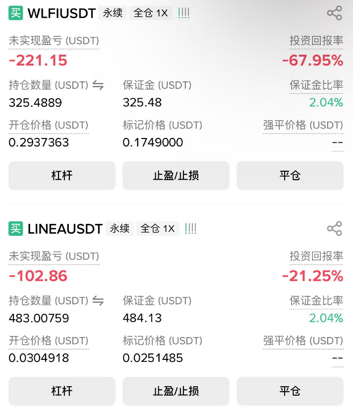
坏消息来了，在我-70%收益割肉睡了一觉起床后，发现wlfi拉盘了。
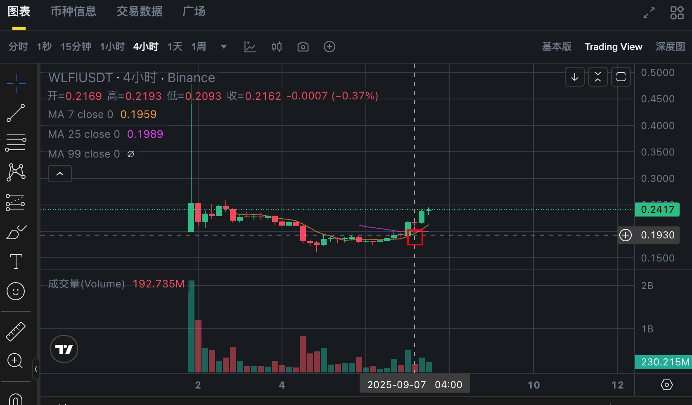
以太坊PoS网络退出队列降至约78.9万枚，加入队列升至约93.6万枚
以太坊质押队列
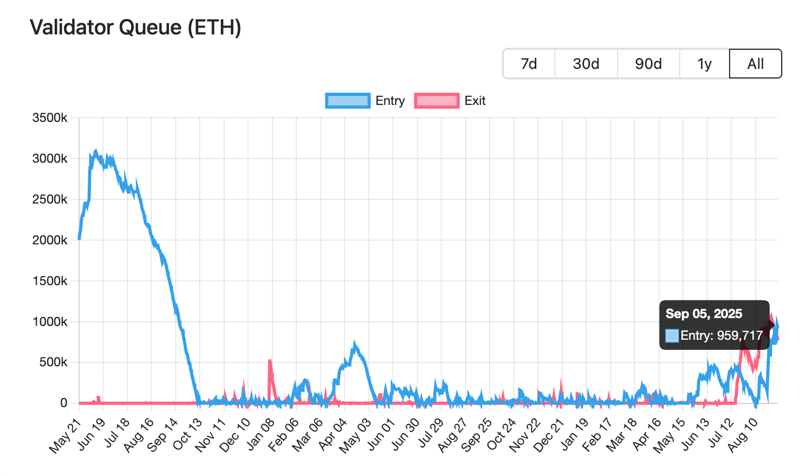
以太坊在 2022 年9 月15 日正式完成了名为 “合并”（The Merge） 的升级，从原来的 工作量证明（PoW） 机制转变为 权益证明（PoS） 机制。这标志着以太坊结束了其最初的PoW 挖矿方式，并开始使用更节能的PoS 共识机制来验证交易并添加新区块。
可以说目前达到了pow转pos那次以后的新高，但需要注意的是退出队列的数量也达到了新高，并不是单向的看好，也有很多人感受到了风险。究竟上涨还是下跌，后面就交给时间了。
以太坊本轮循环能涨到多少？
Tom Lee对以太坊价格预测的依据和价格的总结和视频
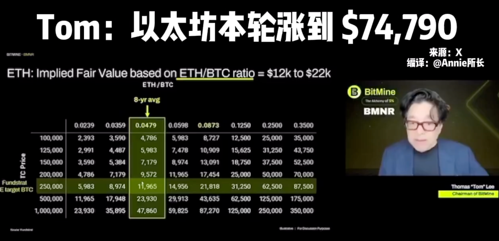
Tom Lee 最新观点认为，如果假设当前华尔街为首的银行体系，把一半业务支付处理量迁移到链上，并参考 Swift 和 Visa 年处理的规模。
纳斯达克审查微策略公司
纳斯达克正加强对上市公司投资加密货币行为审查
今晚美股的微策略板块，集体崩了。主要原因是纳斯达克，要加强对上市公司投资加密货币这块的审查，简单来说就是：监管来了。
有人会担心流动性的问题，限制了币股的资金流入，是一件长期利空的消息。
我个人感觉是短期利空，长期利好。资金审查相当于限制了币股买币，币再推高股价再买币的杠杆大小，一定程度减小了爆雷时候的威力。
币圈长期的发展有几十年，增长更依赖web2的各种资金的流入，而不是微策略。各种微策略出来才仅仅几个月而已，影响很有限。而且背景雄厚的微策略后面有很多的大佬和机构站台，应该不缺资金。
不是因为微策略买，以太坊才涨，
而是因为以太坊会涨，微策略才买
非农数据爆冷，黄金突破3600
美国8月季调后非农就业人口2.2万人，预期7.5万人
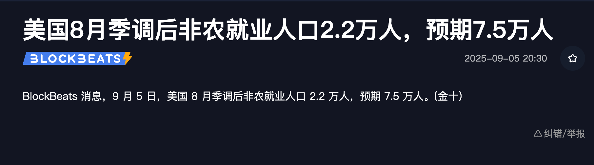
数据出来之前以太坊有一波提前的拉升到4500的位置，虽然数据出来确实是非农不及预期，但因为差距过大，导致经济衰退的恐慌情绪导致了回调。当然我个人觉得这就是庄家清杠杆的惯用借口了。大家仁者见仁智者见智。
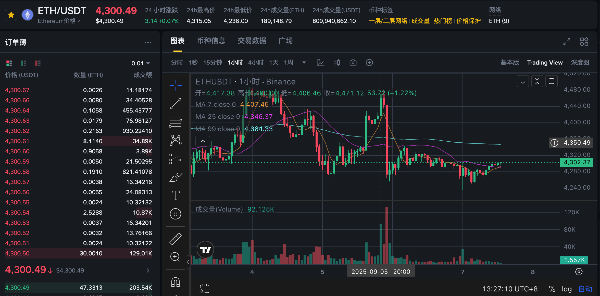
非农数据出来的五分钟之内从3550涨了20多点，两个小时后触及3600
黄金价格
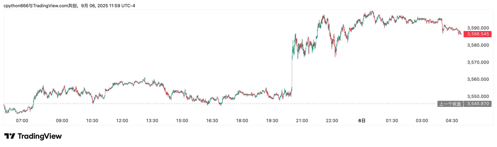
美联储 9 月的决定？
98%降息，10% 50+ bps decrease，88% 25 bps decrease，3% No change
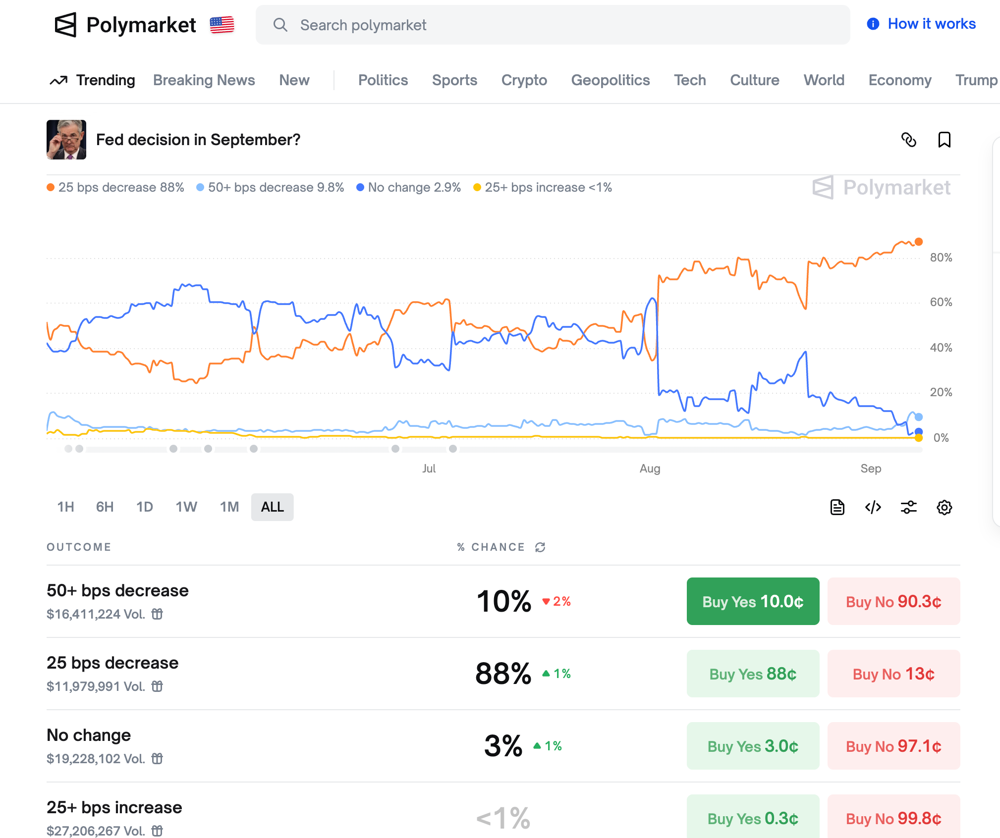
下周重要事件
下周重点宏观数据预告：美国8月PPI、CPI数据来袭
引用自 下周重点宏观数据预告：美国8月PPI、CPI数据来袭
· 周一 23:00，美国 8 月纽约联储 1 年通胀预期；
· 周二 22:00，美国 2025 年非农就业基准变动初值；
· 周三 20:30，美国 8 月 PPI 数据；
· 周三 22:00，美国 7 月批发销售月率；
· 周四 20:30，美国 8 月 CPI 数据、美国至 9 月 6 日当周初请失业金人数；
· 周五 22:00，美国 9 月一年期通胀率预期初值、9 月密歇根大学消费者信心指数初值。
本周受美国非农就业数据爆冷影响
美联储降息预期升温
尽管市场预期美联储将进一步降息
但美元却出人意料地保持强势
甚至在令人失望的非农就业数据后都依旧没有大幅下跌
美股和加密货币则依旧维持震荡
但下周可能是一个关键节点
对于9月议息会议，周三的生产者价格指数（PPI）和周四的消费者价格指数（CPI）都将对新的“点阵图”至关重要
衡量商品出厂价格的PPI，被认为比CPI更具前瞻性。
如果8月份的PPI再次出现超预期的增长
投资者可能会缩减他们对美联储降息的一些更为鸽派的预期